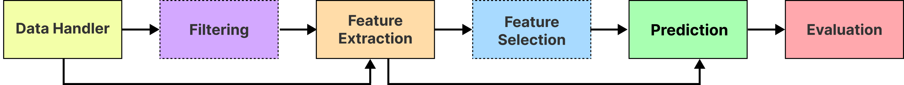

Introduction
Welcome to the LibEMG user guide. This section (1) introduces EMG as an interaction technique, (2) explores the main components of LibEMG’s pipeline, and (3) highlights LibEMG’s role in enabling the development of robust real-time interactions and performing offline analyses.
Myoelectric Control
Myoelectric control, the control of a device through muscular inputs, is beginning to garner increased attention as an interaction technique for hands-free input as it enables subtle, intuitive, and “always-available” control. By placing surface electrodes directly on the skin (i.e., surface EMG), the electrical signals produced during muscular contractions, can be recorded, processed, and passed to machine learning algorithms. These muscle-based inputs can be classified and converted to interactive commands, enabling numerous hands-free interactive experiences.
Myoelectric control has been primarily limited in its use for prosthesis control (i.e., enabling amputees to control a prosthetic limb), in part, due to the inherent challenges associated with designing and developing control systems. LibEMG leans on the work done by the prosthetics community to jump-start the robust exploration of EMG as a reliable interaction technique for HCI researchers to explore. Moving forward, this library should serve as a starting point for unlocking the possibilities of EMG-based input beyond what is currently possible.
Modules
As displayed in Figure 1, LibEMG consists of six main modules. Although many of these modules can stand independently from the others (e.g., the Feature Extraction module can be used on any dataset), they work sequentially to make up the core EMG pipeline. This pipeline is directly inspired from prosthetics research.

Figure 1: Diagram of LibEMG's Core Modules. Dashed lines represent modules that are optional to implement.
Data Handler Module
For offline analysis, loading, parsing, and extracting EMG data can be time-consuming and tedious. Additionally, naming and folder conventions are often unique to specific projects. For the offline component of this module, the goal is to facilitate the process of accumulating offline data. Contrastingly, the online portion of this module acts as a middleware, listening for EMG data over Shared Memory. This module can interface with any device, regardless of its technical specifications, abstracting many complications involved in interfacing with different EMG hardware. Moreover, although LibEMG is hardware agnostic, multiple devices are supported by default. For more information, check out the Supported Hardware section.
Filtering Module
Surface EMG is inherently noisy due to its stochastic nature and external factors such as powerline interference, motion artifact, and muscle cross-talk. Filtering EMG is often required to eliminate this noise and improve the ability of machine learning algorithms to discriminate between muscular inputs. This module provides programmers with a means to apply filters for alleviating noise. This module stands independently from the others and can be leveraged for filtering any raw data. While this module is optional in the pipeline, filtering data usually leads to more repeatable and separable signals, improving classification accuracy.
Feature Extraction Module
As EMG signals are stochastic, they do not provide adequate descriptive information for classification. Feature extraction increases the information density of the underlying signal by computing descriptive properties from a sequence of raw data. This module provides programmers with a set of validated features and feature groups for their projects. This module stands independently from the others and can be leveraged for any feature extraction task.
Feature Selection Module
Feature selection is an important design consideration when developing EMG-based control systems, as features can drastically influence performance. Often, however, it is difficult to know what features to select for a particular problem. This module provides a means to extract the most relevant features for a specific problem. This module is optional and is primarily a tool to explore the robustness of certain features and groups using a variety of metrics. These are the techniques used by previous work to suggest predefined feature groups.
Prediction Module
The prediction module uses machine learning models (classification or regression) to predict user intent from EMG data (i.e., features) generated during contractions. This module enables online (real-time) and offline (after-the-fact) predictions. Currently, it is limited to continuous control schemes where a model continuously predicts user intent based on segments (i.e., windows) of data.
Evaluation Module
System evaluation is required when analyzing the performance of any EMG control system. The two evaluation techniques are offline and online evaluation. Offline evaluation is performed using previously collected EMG data without explicit user feedback. In contrast, online evaluation occurs with the user “in-the-loop” responding to feedback from the control scheme under test. This module provides a means to extract offline evaluation metrics. As online evaluation is application dependent (and should be tested using the implemented system), it is not directly addressed by this library.